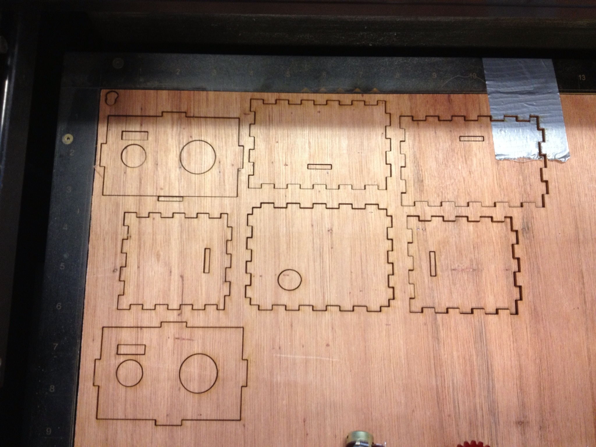
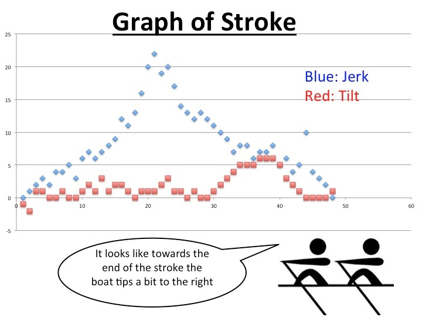

Crew Sensor Arduino, Laser Cutter, Processing
More Pictures



Description
Crew Rowers need help keeping their boat stable. This Crew sensor incorporates a Laser cut box, battery, gyroscope, and accelerometer to provide live time feedback to rowers. Use the switch to calibrate the sensor. The sensor records your average jostling and tipping, and the standard deviation. Then, as you row, the module uses 8 LED's (4 for forward-backward jostling, 4 for side-to-side tipping) to tell the rower how unstable the boat is. The number of lights which are on is determined by how many standard deviations away from average the jolting is. The rower can then improve, their stroke, and mantain their form when they get tired
Features
- Gyroscope & Accelerometer signal Processing
- SD card to record results
- UI to view results (made in Processing)
More

